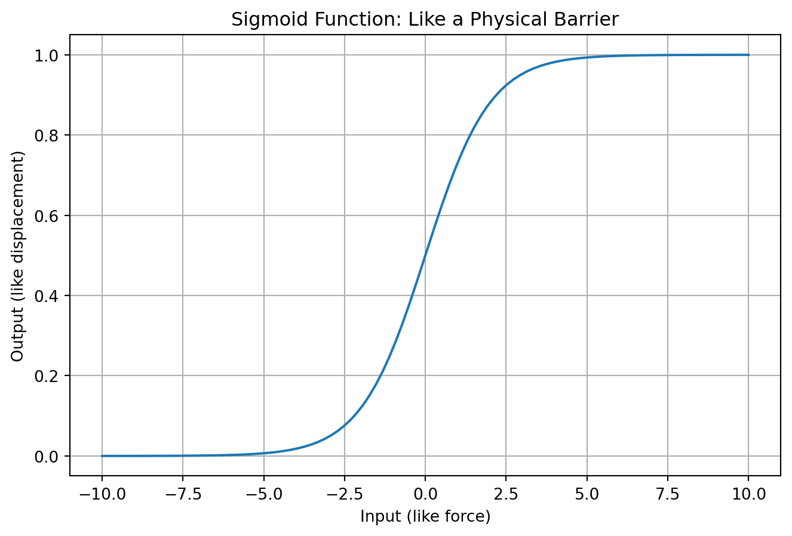
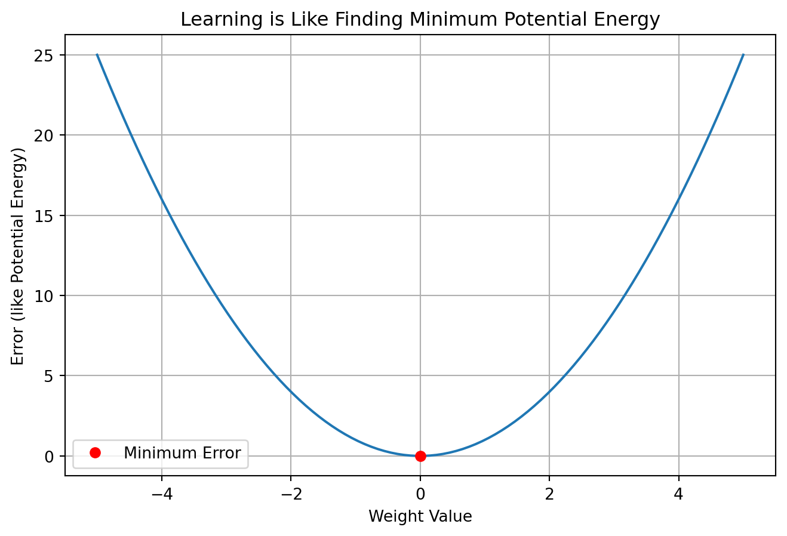
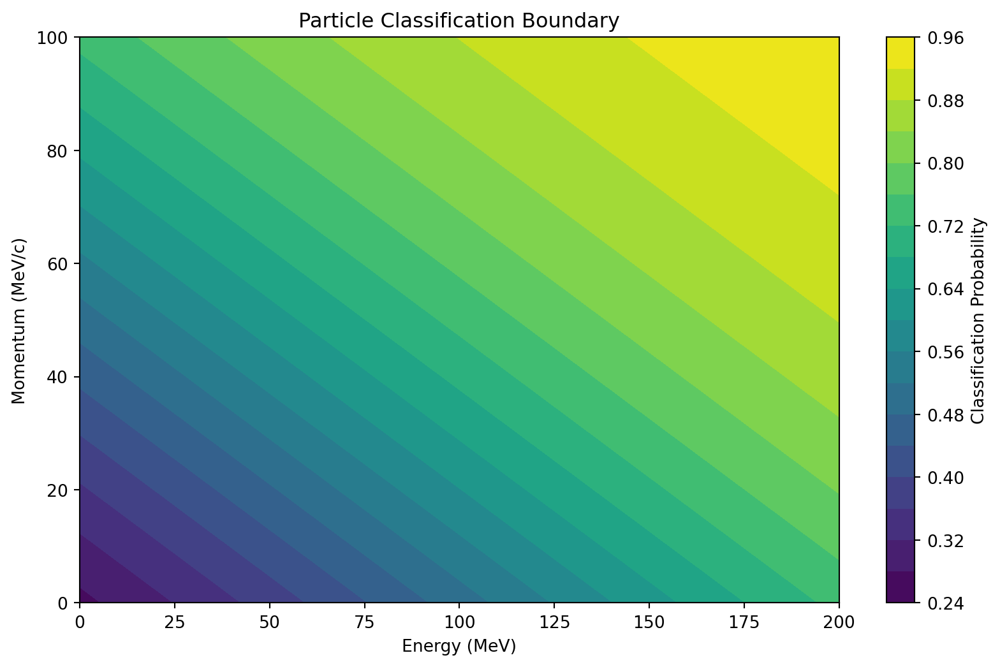

import numpy as np
import matplotlib.pyplot as plt
# Set plotting style
#plt.style.use('seaborn')Repetiion
Setup
Introduction: Neural Networks as Physical Systems
Neural networks might seem complicated, but we can understand them using physics concepts you already know! Let’s explore how these computational tools are similar to physical systems we’ve studied.
1. Neural Networks as Energy Flow
Just like we study energy flow through physical systems, a neural network processes information flowing through it:
- Input values: Like initial energy
- Weights: Like how efficiently energy transfers (think spring constants)
- Bias: Like a baseline energy level
- Output: Like final energy state
# Simple example
input_value = 2 # Like initial energy
weight = 0.5 # Like energy transfer efficiency
bias = 1 # Like baseline energy level
output = weight * input_value + bias
print(f"Input energy: {input_value}")
print(f"Transfer efficiency: {weight}")
print(f"Baseline: {bias}")
print(f"Final state: {output}")Input energy: 2
Transfer efficiency: 0.5
Baseline: 1
Final state: 2.02. The Sigmoid Function: Nature’s Barrier
Many physical systems have natural limits. Think about: - Terminal velocity in air resistance - Saturation in magnetic materials - Maximum compression of a spring
Neural networks use a similar concept called the sigmoid function:
def sigmoid(x):
return 1/(1 + np.exp(-x))
x = np.linspace(-10, 10, 100)
plt.figure(figsize=(8, 5))
plt.plot(x, sigmoid(x))
plt.title('Sigmoid Function: Like a Physical Barrier')
plt.xlabel('Input (like force)')
plt.ylabel('Output (like displacement)')
plt.grid(True)
plt.show()
3. Learning as Finding Minimum Potential Energy
Training a neural network is like a ball rolling down a hill: 1. Start somewhere on the hill (initial weights) 2. Look which way is downhill (calculate error) 3. Take a small step in that direction (update weights) 4. Repeat until you reach the bottom (minimum error)
# Visualize a simple "energy landscape"
x = np.linspace(-5, 5, 100)
y = x**2 # Simple parabola like potential energy well
plt.figure(figsize=(8, 5))
plt.plot(x, y)
plt.title('Learning is Like Finding Minimum Potential Energy')
plt.xlabel('Weight Value')
plt.ylabel('Error (like Potential Energy)')
plt.grid(True)
# Mark the minimum
plt.plot(0, 0, 'ro', label='Minimum Error')
plt.legend()
plt.show()
4. Practical Example: Particle Detection
Let’s build a simple “neuron” that could help detect particles:
def simple_neuron(energy, momentum, weight1, weight2, bias):
# Combine inputs like forces combining
total_input = weight1 * energy + weight2 * momentum + bias
# Convert to probability using sigmoid
probability = sigmoid(total_input)
return probability
# Example values
energy = 100 # MeV
momentum = 50 # MeV/c
w1, w2 = 0.01, 0.02 # Some random weights
b = -1
probability = simple_neuron(energy, momentum, w1, w2, b)
print(f"Probability this is our particle: {probability:.2%}")Probability this is our particle: 73.11%5. Visualizing Decision Boundaries
Just like phase transitions in physics separate different states of matter, neural networks create boundaries between different classifications:
# Create a grid of points
E, M = np.meshgrid(np.linspace(0, 200, 100), np.linspace(0, 100, 100))
Z = simple_neuron(E, M, w1, w2, b)
plt.figure(figsize=(10, 6))
plt.contourf(E, M, Z, levels=20)
plt.colorbar(label='Classification Probability')
plt.title('Particle Classification Boundary')
plt.xlabel('Energy (MeV)')
plt.ylabel('Momentum (MeV/c)')
plt.show()
Key Takeaways
Neural Networks are like physical systems: 1. Process inputs like energy flow 2. Have natural limits (like terminal velocity) 3. Find minimum energy states during training 4. Create boundaries between different states 5. Follow principles of optimization we see in nature
Try It Yourself!
Change the weights and bias in the particle detection example above. How does this affect the decision boundary? This is similar to adjusting the parameters of a physical system!